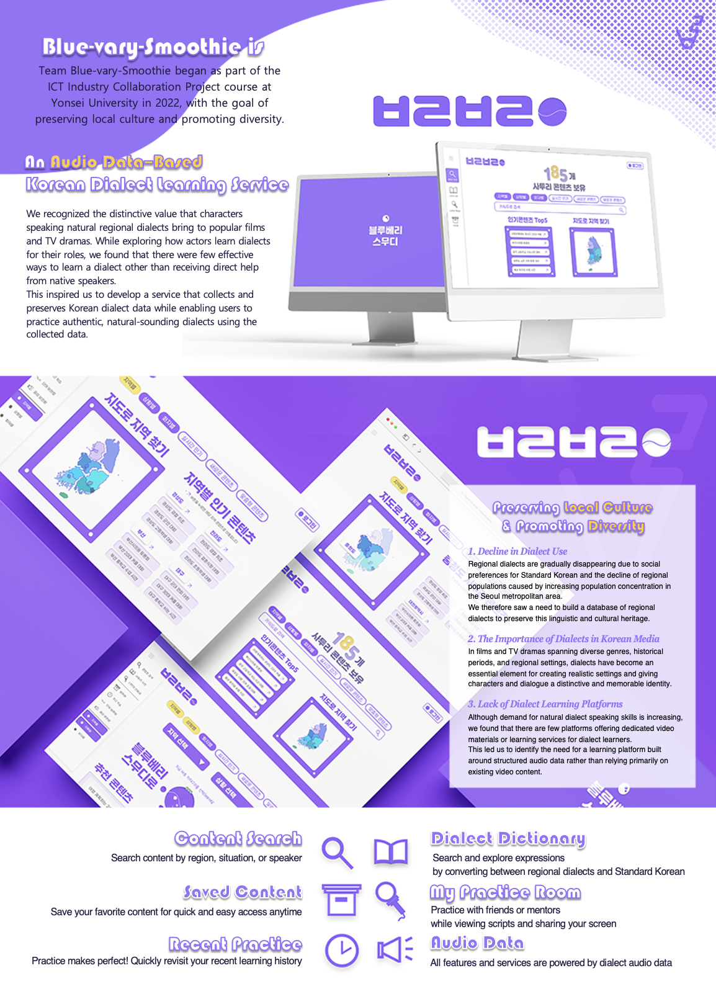

Blue-vary-smoothie: A Dialect Learning Platform
ICT Industry-Linked Project · 2022
A year-long, class-linked program in which students take part in a national competition across two semesters. Sponsored by the Ministry of Science and ICT and the Institute of Information & Communications Technology Planning & Evaluation (IITP), it gives undergraduates hands-on experience with domestic and international IT companies alongside academic credit. Our team was selected as an outstanding team in the first semester and continued into an advanced second-semester phase; the resulting program was registered with the Korea Copyright Commission and received a design award.


The project was motivated by South Korea's social pressure to favor standard language over regional dialects, the decline of dialect use as population concentrates in the capital region, and — at the same time — a growing need for authentic dialect portrayal as Korean media increasingly depicts stories set in diverse regions and eras. Despite rising demand for natural dialect fluency, no dedicated learning platform existed, so the team built "Blue-vary-smoothie," a dialect-learning platform using AI Hub's public Korean dialect speech dataset — offering dialect-content search and browsing, an NLP-based dialect dictionary, and a practice-room feature.